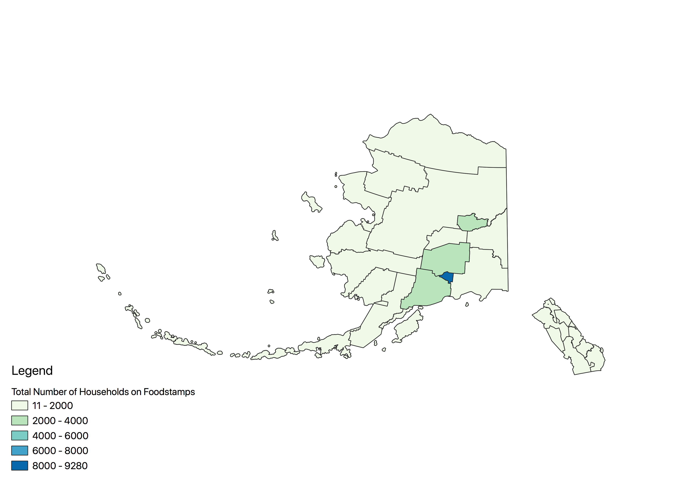
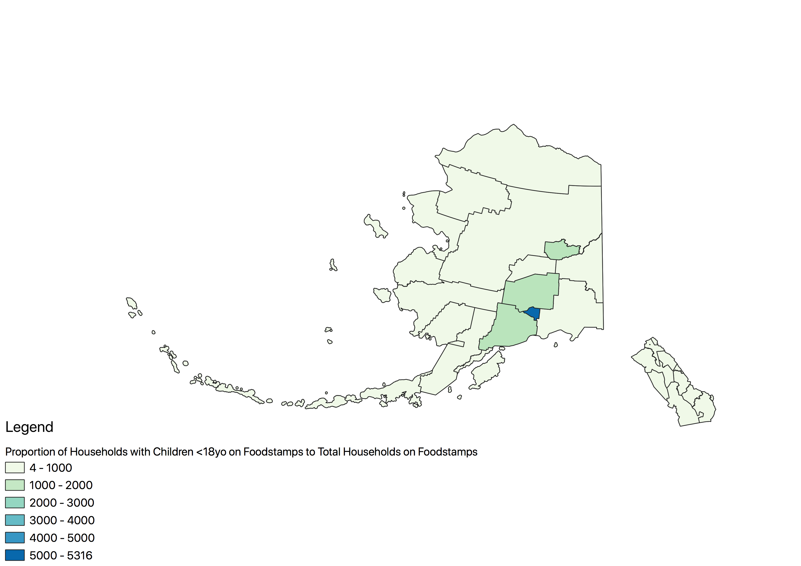

Homework 8: Different Chloropleth Maps of Alaska
Jessica Gross
Three different maps depicting the ratio of households that use SNAP/Food Stamps with children under 18 years old
to the total number of households using SNAP/Food Stamps
Total Households on SNAP
For Reference, this is the map depcting the total number of households using SNAP/Food Stamps, using Pretty Breaks

Map 1: Pretty Breaks
This map is categorized using Pretty Breaks, which is a decent method to use. However, it doesn't give us a lot of variety between each county
(though I think this is more due to the amount of classes used).

Map 2: Natural Breaks
There still is no difference when converting this map to the Natural Breaks, which is a helpful categorization to use when classifying data.
However, Natural Breaks focus on extremes of the data, which is apparent here. There is one county, in the South, on one side of the spectrum,
and the rest fall onto the other side of the specturem, which doesn't really give us any variation.

Map 3: Equal Intervals
For some reason, my data looks the exact same even with the Equal Interval. I know that my data does have disceprancies,
because when I add more classes, it varies considerably between each categorization. However, I decided to air on the side of caution and use less classes.
Equal Interval categoraizations are nice because they clump the data evenly. However, it is the rare instance when the data can be dividely perfectly evenly.

Data used for this project
Link to Shapefile
Csv file:
CSV File